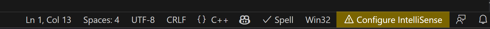
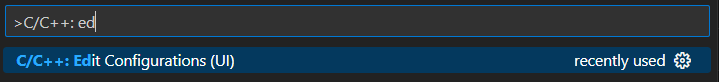
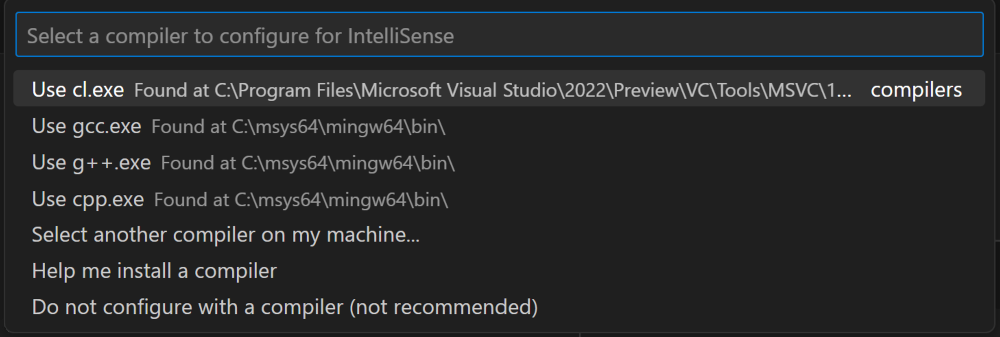
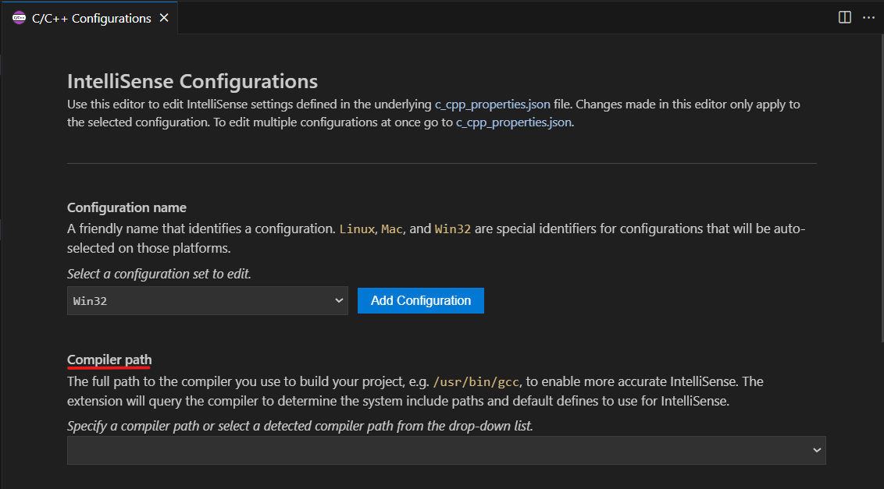
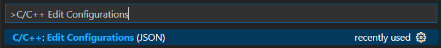
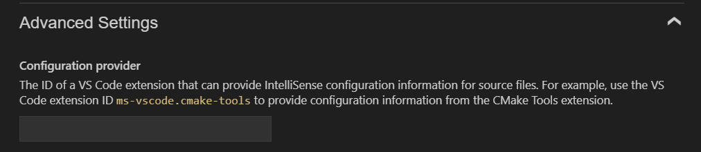
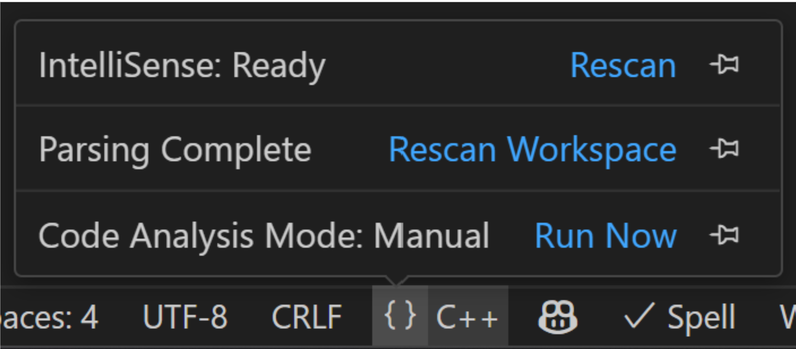

配置 C/C++ IntelliSense
本文介绍如何配置 C/C++ 扩展，以便在 Visual Studio Code 中提供 C++ 专属的 IntelliSense 建议。IntelliSense 是 VS Code 内置的强大工具，提供多种代码编辑功能，帮助您更快速、更高效地编写代码。例如，代码补全、参数信息、语法高亮、代码操作（灯泡图标）和成员列表都是通过 IntelliSense 生成的。
C/C++ IntelliSense 只要求您的系统上安装了 C/C++ 编译器。C/C++ 编译器会向 IntelliSense 提供 C++ 专属信息，例如系统包含路径的位置和其他设置。有关项目级别的配置，请参考项目级别 IntelliSense 配置部分。
C/C++ 扩展何时会为我配置核心 IntelliSense 功能？
编译器是配置核心 IntelliSense 功能的唯一要求。为了识别用于 IntelliSense 的编译器，C/C++ 扩展会扫描您机器上的常见路径，查找诸如 Clang、GCC、MinGW、cygwin、cygwin64 和 MSVC 等编译器。如果这些编译器中的任何一个被识别并且位于安全位置，它们将自动配置用于 IntelliSense。否则，将显示一条通知，要求您确认是否应为此编译器配置 IntelliSense。在上述两种情况下，所选编译器也会被设置为默认编译器。
如何检查 IntelliSense 是否已配置
如果尚未配置 IntelliSense，C/C++ 扩展会在状态栏中显示一个黄色指示器，带有标有 Configure IntelliSense 的警告标志。

要进行配置，请选择状态栏指示器，这将打开配置快速选择。快速选择可以帮助您选择或安装 C/C++ 编译器。
如果您没有看到状态栏指示器，也可以检查项目的 c_cpp_properties.json 文件。此文件存储了所有 IntelliSense 配置设置。通过在命令面板 (kb(workbench.action.showCommands)) 中选择 C/C++: Edit Configurations (UI) 导航到此文件。检查 IntelliSense mode 以找到您的配置。

如何配置 IntelliSense
IntelliSense 配置存储在 c_cpp_properties.json 文件中，该文件会自动在您的工作区中创建。以下三种方式都是编辑 c_cpp_properties.json 文件的不同方法：
方式 1：通过配置快速选择选择一个配置选项
通过命令面板 (kb(workbench.action.showCommands)) 中输入 Select IntelliSense Configuration 打开快速选择，它会显示一个下拉列表，其中包含 C/C++ 扩展在您的机器上找到的所有配置选项。

选择其中一个可用选项。如果您选择一个编译器，该编译器将默认用于 IntelliSense。您可以随时返回 Configure IntelliSense 快速选择来更改用于配置 IntelliSense 的选项。
如果快速选择中没有可用的选项，则说明在您的系统中找不到任何编译器。您可以手动浏览您的机器或安装 C/C++ 编译器。在 Windows 机器上安装，请选择 Help me install a compiler 选项，它将引导您完成如何安装 C/C++ 编译器的分步教程。在 macOS 或 Linux 机器上，请选择 Install a compiler 并按照提示操作，在您的机器上安装 C++ 编译器。
方式 2：通过用户界面编辑 IntelliSense 配置
通过命令面板 (kb(workbench.action.showCommands)) 中选择 C/C++: Edit Configurations (UI) 打开您的 IntelliSense 配置。此视图是 c_cpp_properties.json 文件的用户界面。

将 Compiler path 字段设置为用于构建项目的编译器的完整路径。例如，在 Linux 上使用 GCC 的默认安装路径时，编译器路径为 /usr/bin/gcc。将 IntelliSense mode 设置为与您使用的编译器架构对应的变体。
方式 3：直接编辑 c_cpp_properties.json 文件
您可以直接编辑 c_cpp_properties.json 文件来自定义配置。使用命令面板 (kb(workbench.action.showCommands)) 中的 C/C++ Edit Configurations (JSON) 命令，然后 c_cpp_properties.json 文件将在工作区的 .vscode 文件夹中创建。

使用 compilerPath 变量来添加一个编译器。此变量是您用于构建项目的编译器的完整路径。例如，在 Linux 上使用 GCC 的默认安装路径时，编译器路径为 /usr/bin/gcc。
有关 c_cpp_properties.json 文件的更多信息，请参阅架构参考。
根据您的操作系统选择以下示例，获取 c_cpp_properties.json 文件：
使用 MinGW 的默认安装路径：
{
"configurations": [
{
"name": "Win32",
"includePath": [
"${workspaceFolder}/**"
],
"defines": [
"_DEBUG",
"UNICODE",
"_UNICODE"
],
"windowsSdkVersion": "10.0.22621.0",
"cStandard": "c17",
"cppStandard": "c++17",
"intelliSenseMode": "${default}",
"compilerPath": "C:/msys64/mingw64/bin/gcc.exe"
}
],
"version": 4
}使用 Clang 的默认安装路径：
{
"configurations": [
{
"name": "Mac",
"includePath": [
"${workspaceFolder}/**"
],
"defines": [],
"macFrameworkPath": [
"/Library/Developer/CommandLineTools/SDKs/MacOSX.sdk/System/Library/Frameworks"
],
"compilerPath": "/usr/bin/clang",
"cStandard": "c17",
"cppStandard": "c++17",
"intelliSenseMode": "macos-clang-arm64"
}
],
"version": 4
}使用 GCC 的默认安装路径：
{
"configurations": [
{
"name": "Linux-GCC",
"includePath": [
"${workspaceFolder}/**"
],
"defines": [],
"compilerPath": "/usr/bin/g++",
"cStandard": "c17",
"cppStandard": "c++17",
"intelliSenseMode": "gcc-x64",
"browse": {
"path": [
"${workspaceFolder}"
],
"limitSymbolsToIncludedHeaders": true,
"databaseFilename": ""
}
}
],
"version": 4
}项目级别 IntelliSense 配置
使用编译器配置 IntelliSense 可以为您提供核心 IntelliSense 功能。这种设置称为基础配置。对于更复杂的使用场景，例如设置一个需要以下内容的项目：
- 额外的包含路径，例如对一个或多个不同库的引用
- 影响语言行为（进而影响 IntelliSense）的特定编译器参数
有多种其他方式可以配置 IntelliSense。您可以通过以下方式提供这些额外配置：
c_cpp_properties.json文件及相关设置- 以另一个 VS Code 扩展形式的自定义配置提供程序（例如，Makefile Tools 或 CMake Tools 扩展）
compile_commands.json文件配置提供程序
自定义配置提供程序是 VS Code 中的另一个扩展，它可以潜在地提供比 C/C++ 扩展更准确的 C++ IntelliSense 配置。例如，对于 CMake 或 Make 构建系统，Makefile Tools 或 CMake Tools 扩展可以作为配置提供程序。要将扩展添加为配置提供程序，可以通过配置快速选择选择扩展，通过在 Advanced Settings 下编辑 Configuration provider 字段将其添加到配置 UI 中，或者将 configurationProvider 字段添加到您的 c_cpp_properties.json 文件中。例如，对于 CMake 扩展，要添加的路径将是 ms-vscode.cmake-tools。

C/C++ 扩展会扫描您的系统以查找自定义配置提供程序。如果只识别到一个自定义配置提供程序，此配置提供程序将自动配置用于 IntelliSense。如果识别到多个配置提供程序，您需要通过打开配置快速选择来选择扩展应使用哪一个。
compile_commands.json 文件
提供 IntelliSense 配置的另一个选项是 compile_commands.json 文件，它描述了项目中每个文件所使用的确切编译命令。此文件通常由构建系统（如 CMake 或 Bazel）在配置项目时通过设置命令行参数生成。可以通过如何配置 IntelliSense部分中讨论的相同方法选择 compile_commands.json 文件进行配置：通过配置快速选择、通过 UI 编辑配置，或直接编辑 c_cpp_properties.json 文件。在配置 UI 中，可以在 Advanced Configurations 和 Compile commands 字段下添加该文件。例如，如果您的 compile_commands.json 文件位于工作区的根目录中，请在 Compile commands 字段中输入 ${workspaceFolder}/compile_commands.json。否则，可以使用 compileCommands 配置属性直接将其添加到 c_cpp_properties.json 文件中。
如果编译命令数据库不包含与您在编辑器中打开的文件相对应的翻译单元的条目，则将改用您的基础配置（位于 c_cpp_properties.json 中）（例如您的 includePath 和 defines）。如果 C/C++ 扩展回退到基础配置，语言状态栏指示器会在状态栏中显示标签 Configure IntelliSense。
如果您同时指定了自定义配置提供程序和 compile_commands.json 文件，则会首先查询自定义配置提供程序以获取 IntelliSense 配置。
如果您的程序包含不在工作区或标准库路径中的头文件，您可以修改 Include Path。C/C++ 扩展通过查询 Compiler path 指定的编译器来填充包含路径。如果扩展无法找到目标系统库的路径，您可以手动输入包含路径。
使用语言状态栏检查 IntelliSense 活动
您可以使用语言状态栏来确定 IntelliSense 是否正在积极处理您的文件。要调用语言状态栏，请打开一个 C++ 文件。状态栏显示文本 {} C++。将鼠标悬停在 {} 符号上以打开语言状态栏弹出菜单。弹出菜单中的顶部项目指示 IntelliSense 状态。以下是不同的状态及其含义：
- IntelliSense: Ready = IntelliSense 已为 C/C++ 扩展配置好，并且会在您与编辑器交互时（例如编写代码）自动激活。
- IntelliSense: Updating = IntelliSense 正在积极工作，根据您对代码所做的更改来确定代码补全、语法高亮等内容。

您可以选择语言状态栏弹出菜单中任何项目右侧的图钉图标，将其永久固定到状态栏上。
后续步骤
- 有关 IntelliSense 配置的更多信息，请参阅自定义默认设置。
- 如果您在配置设置时遇到问题，请在 GitHub discussions 发起讨论，或者如果您发现需要修复的问题，请在 GitHub issues 提交问题。
- 探索 c_cpp_properties 架构。
- 查阅 C++ 扩展概述。